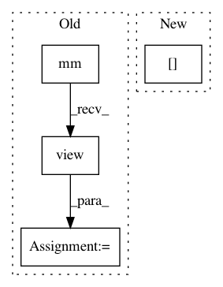

6c06a88957549b1405f43361e4aa911abc56ef66,se3cnn/kernel.py,SE3Kernel,combination,#SE3Kernel#Any#,296
Before Change
basis_kernels_ij = kij.contiguous().view(b_el, -1) // [beta, i*j*x*y*z]
ker = torch.mm(w, basis_kernels_ij) // [I*J, i*j*x*y*z]
ker = ker.view(mi, mj, *b_size) // [I, J, i, j, x, y, z]
ker = ker.transpose(1, 2).contiguous() // [I, i, J, j, x, y, z]
ker = ker.view(mi * self.dims_out[i], mj * self.dims_in[j], *b_size[2:]) // [I*i, J*j, x, y, z]
kernel[si, sj] = ker
else:
After Change
weight_index += mi * mj * b_el
ker = torch.einsum("uvb,bijxyz->uivjxyz", (w, kij)).contiguous() // [u, i, v, j, x, y, z]
kernel[si, sj] = ker.view_as(kernel[si, sj])
else:
kernel[si, sj] = 0
In pattern: SUPERPATTERN
Frequency: 3
Non-data size: 4
Instances
Project Name: mariogeiger/se3cnn
Commit Name: 6c06a88957549b1405f43361e4aa911abc56ef66
Time: 2018-10-04
Author: geiger.mario@gmail.com
File Name: se3cnn/kernel.py
Class Name: SE3Kernel
Method Name: combination
Project Name: mariogeiger/se3cnn
Commit Name: ca5ec9585e711f63acbe337bc38c37520189b9d7
Time: 2017-08-09
Author: geiger.mario@gmail.com
File Name: se3_cnn/convolution.py
Class Name: SE3KernelCombination
Method Name: backward
Project Name: rusty1s/pytorch_geometric
Commit Name: 4e43734dd0b7f1c026069af64151a8f52f41060d
Time: 2019-07-03
Author: matthias.fey@tu-dortmund.de
File Name: torch_geometric/nn/conv/gat_conv.py
Class Name: GATConv
Method Name: forward